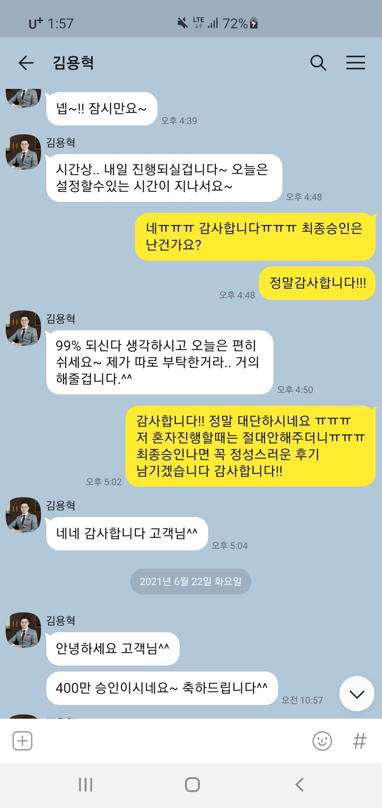

[개인회생자대출] 김용혁 이사님 정말 감사드립니다!!
재직상태 : 4대가입 직장인
기간 : 1년
소득 : 3500~4000
신용등급 : 개인회생중
채무내역 : 개인회생중이며 회생 후 대출 300보유중이였음
서류 : 자동차담보대출로 진행/ 자동차 관련 서류, 통장내역 , 재직관련서류, 초본 등
후기 : 안녕하세요 저는 3월달에 개인회생 개시결정 후 6월 집회참여하고 인가를 기다리는중이였습니다.
개시 후 기대출이 300만원 있는 상황이였고, 추가 대출이 필요하여 여기저기 정말 안알아본곳이 없을정도로 다 알아봤었는데 다른곳들은 전부 인가 후 진행하자고 하였습니다.
그러던 중 뱅크앤론을 알게되었고 상담하여보니 인가전에도 변제금 잘 납부중이면 두개정도는 넣어볼 수 있다는 말을 듣고 반신반의하면서도 지푸라기라도 잡는심정으로 진행했습니다.
아쉽게도 신용대출은 부결났지만 이사님께서 특별히 예외 진행으로 신청해주신다고... 제 차가 12년된차라 원칙적으로 차량담보대출은 안나오는데.. 실제로 저도 차량담보대출 많이 알아봤었지만 연식이 오래돼서 다들 안받아주더라구요.. 근데 그걸 뚫고 400승인나게 해주셨습니다.. 이자리를 빌어 다시한번 감사드립니다.
앞으로 대출받을 일이 없으
면 가장 좋겠지만 혹시라도 다시 받게된다면 꼭 뱅크앤론을 이용하겠습니다 정말 감사드립니다!!!!

https://cafe.naver.com/cityman88/287485